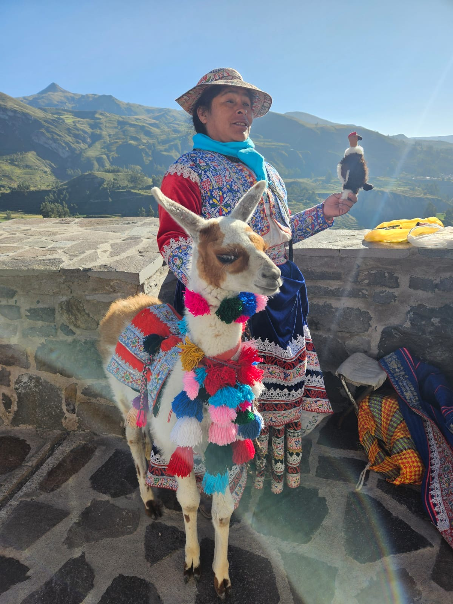
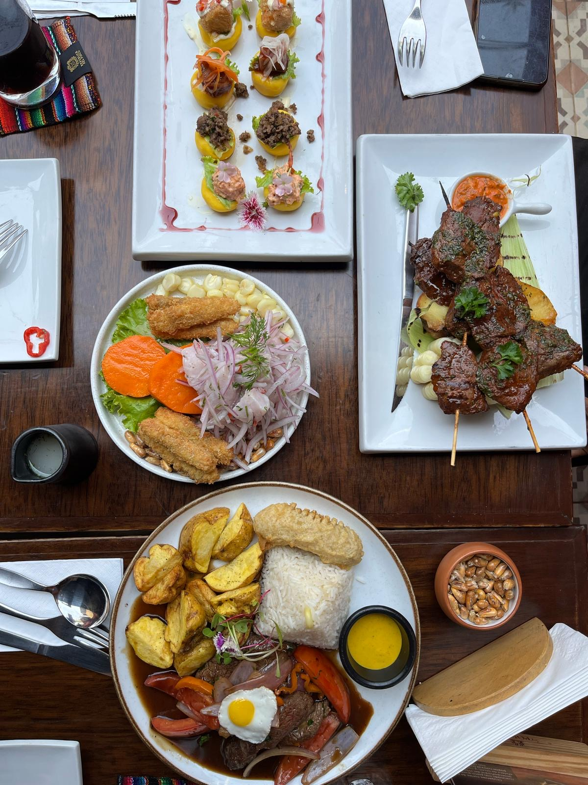
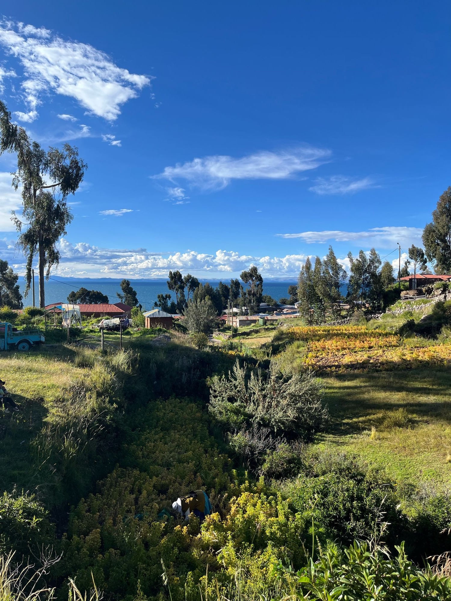
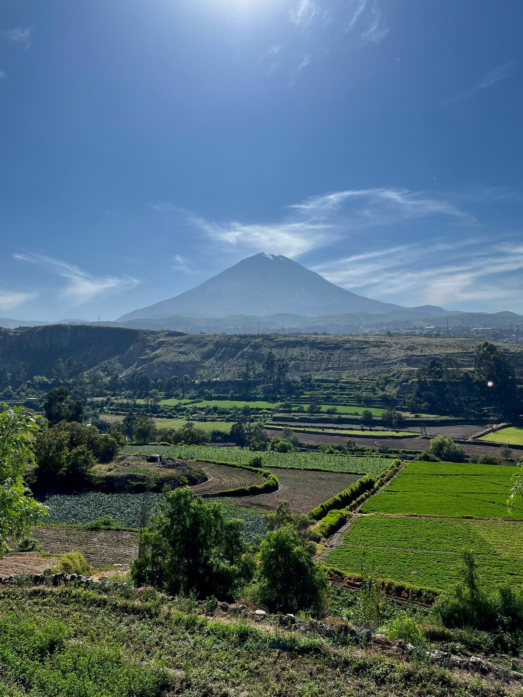

Brésil
Période du voyage : [mois et année]
Le géant d’Amérique du Sud, un pays à l’énergie contagieuse, entre plages urbaines, forêt amazonienne et culture métissée. La musique et la danse y rythment aussi bien les fêtes que le quotidien. Réputé pour : Rio de Janeiro et le Christ Rédempteur, le carnaval, l’Amazonie, les chutes d’Iguaçu, le football, la samba, la caïpirinha.
Photos


Pérou
Période du voyage : [mois et année]
Le cœur de l’ancien empire inca, où les sites archéologiques s’élèvent dans des paysages de montagnes spectaculaires. Il possède aussi une cuisine devenue l’une des plus réputées du continent. Réputé pour : le Machu Picchu, Cusco et la Vallée sacrée, le lac Titicaca, les lignes de Nazca, le ceviche, les lamas et alpagas.
Photos







Mexique
Période du voyage : [mois et année]
Un pays à l’histoire pluriséculaire, hérité des civilisations maya et aztèque et de la période coloniale espagnole. Couleurs, musique et traditions y sont partout, des mégapoles aux villages et aux plages des Caraïbes. Réputé pour : les pyramides de Chichén Itzá et Teotihuacán, la fête des morts (Día de Muertos), les tacos, la tequila et le mezcal, les cénotes, les plages de la Riviera Maya.
Photos